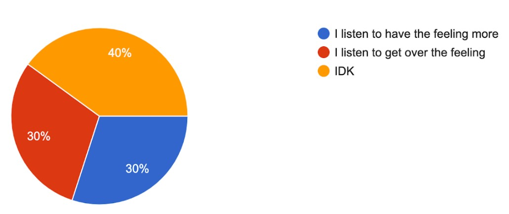

Music and Sadness
Written and coded by Joalis
Quarantine has given us lots of time to listen to music! When my playlist of favorite songs runs out, Spotify suggests new songs based on those I like, so all this time online means I discover new music I likely would not have found otherwise.
Many students’ musical tastes have changed while being remote. Has yours changed? I notice that as I wait for my favorite artists to drop new music and albums, I find new names interesting, and sometimes I am interested in old music from over 7 years ago.
Sometimes musical choices relate to emotions. When I feel sad I may listen to depressing music; when happy I may listen to pop or rap. I imagine there is most likely music for every feeling. If my musical tastes have changed over quarantine, that might be connected to other changes in how I feel generally, and how I'm doing.
Because this interests me, I made a survey form so other students could have a chance to ask that question. Everyone who took the survey listens to music a lot. Over half listen to music all the time. I expected most people to choose that.
I think music is a stress reliever, or helps students concentrate by covering other sounds. At home I hear a lot of sounds, like parents cooking or cleaning or vacuuming, or my brothers playing. I'd rather hear my own music. I bet that's true for you.
Here's what students wrote in my survey:
Almost 3/4 of people said yes, that their musical tastes had changed in big ways during quarantine. Why did our tastes change?
Over 3 quarters of people choose which music to listen to based on their feelings. I wonder how people’s feelings have changed during quarantine.
What feelings are the songs and music you pick about lately?
The number of people that have been feeling sad or angry has doubled since the pandemic.I wonder which sad and angry music has been getting listened to the most.
Almost 3 quarters of us feel more sadness and anger and other feelings when we listen to music that reflects our feelings.
If you feel a certain way, does the music make you feel MORE like that?
For the students that know why they listen to music based on their feelings ,half want to get over the feeling and half want to get deeper in their feelings. I'm like the second group. When I get deeper into my feelings It's easier for me to express them and expressing my feelings feels good even if they are sad or angry feelings, I still like to express them.
I hope that students that listen to the music to get over their feelings may want to try and listen to have the feeling more and see how it will work out!
What are people listening to now?
I build these tables from the responses people put in their forms, and tried to find examples on YouTube so you could listen, think about why they liked the music, and whether you do also.
People who want to get into their feelings more
| Kind of Music | Favorite Artists & Songwriters |
|---|---|
| Mostly sad and love songs. | Lewis Capaldi and Powfu Lewis Capaldi - Headspace Line Without a Hook - Ricky Montgomery |
| cool sad angry full power | zavodila fn garcello headache |
| Calm, relaxing. Loud and energetic Sad and Depressing | Aot op- (Linked) Horizon- Demon Slayer Lost Umbrella- Renai Circulation Nippon Egao Hyakkei- Bunny Senpai Hunter x Hunter op (Departure) |
People who want to get over their feelings
| Kind of Music | Favorite Artists & Songwriters |
|---|---|
| Hip - Hop (rap) | Pressa Armani, Don Toliver, Gunna, lil durk , lil Uzi vert, lil tecca Pressa Armani - attachments (clean) don toliver - his & hers (clean ) Lil tecca - never left (clean) |
| rap country hip pop gothic | ski mask da baby nle choppa the kid Laroi Rockstar by dababy ft Roddy rich |
| happy music, sad music | drivers license by Olivia rodrigo |
| Happy, loud, strong music | N/A |
People who listen to music for other reasons.
| Kind of Music | Favorite Artists & Songwriters |
|---|---|
| N/A | Dream, Corpse husband, Bruno Mars, Billie eilish, Alan walker, cardi b, Demi lavoto mask by dream cat girls are ruining my life by corpse husband Road by dream | goth | Moon 音樂 jealousy is a b**** , i hate her |
| happy and energetic. | Khalid Weak |
| N/A | Alexander, polo G, Nf,Blackpink,Twice, I Know Nippon Egao Hyakkei fairytale The Search |